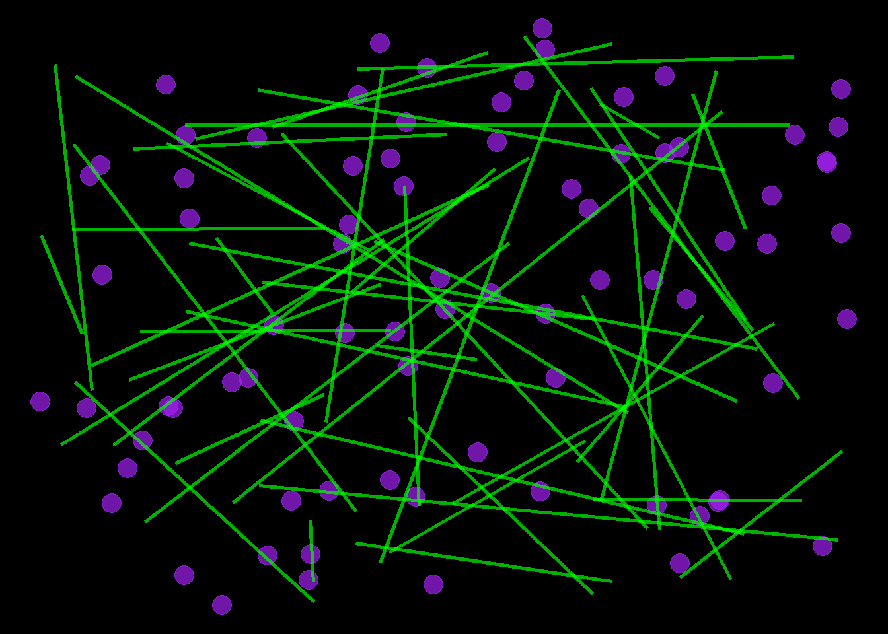
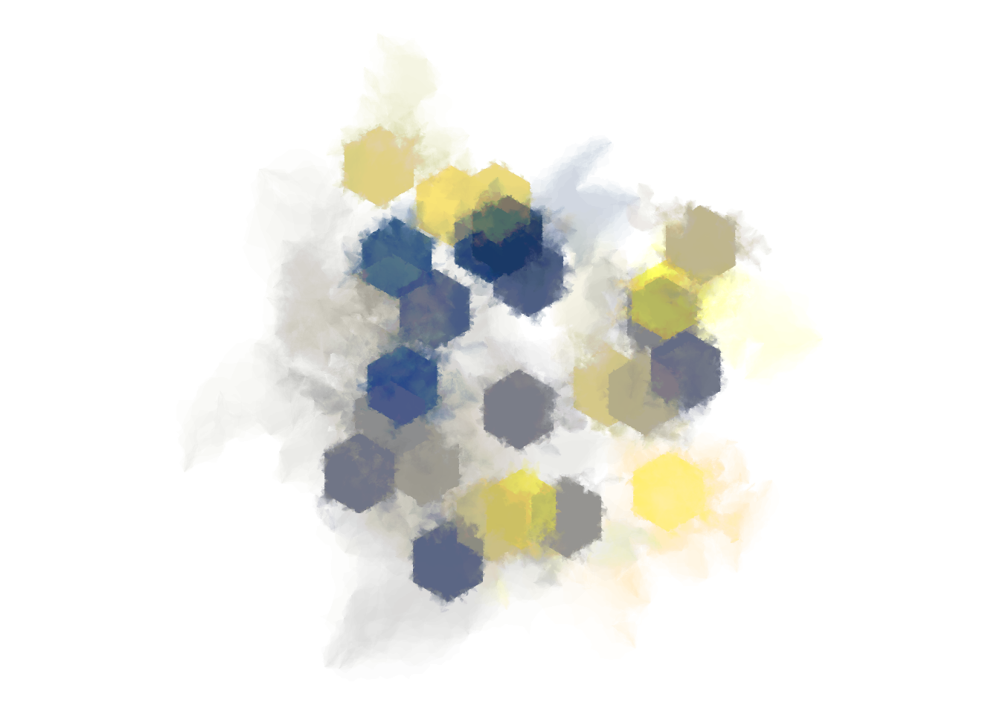

Warning: Using `size` aesthetic for lines was deprecated in ggplot2 3.4.0.
ℹ Please use `linewidth` instead.

Title: Lazer Tag
Description: This art piece aims to reflect the childlike mind when thinking about a simple fun activity such as lazer tag. In this top down view of a lazer tag arena, the purple dots represent participants while the lime green lines represent the lazers being shot.
Code Choices:
By setting the num_circles arg to 80, we obtain 80 dots in the image.
By setting num_lines to 50, we obtain 50 lines in the image.
By setting circle_col to “purple”, the dots are filled in with purple.
By setting circle_border to “purple”, the border of the dots are purple.
By setting circle_shape to 21, we get circles for the shape of the points.
By setting circle_size to 5, the size of the points is decided, in this case they are relatively large.
By setting line_col to “green”, the lines become green.
The line size is set by specifying the arg line_size.
The background of the image is set to black with the background_col arg.
The seed arg is set to 7, I just like that number, it could be anything.
Art Piece 2
# Function to calculate edge lengthedge_length <-function(x1, y1, x2, y2) {sqrt((x1 - x2)^2+ (y1 - y2)^2)}# Function to grow a polygon with noisegrow_polygon_l <-function(polygon, iterations, noise, seed =NULL) {if(!is.null(seed)) set.seed(seed)for(i in1:iterations) polygon <-insert_edge_l(polygon, noise)return(polygon)}# Function to insert an edge in the polygoninsert_edge_l <-function(polygon, noise) { ind <-sample_edge_l(polygon) len <- polygon[[ind]]$seg_len last_x <- polygon[[ind]]$x last_y <- polygon[[ind]]$y next_x <- polygon[[ind +1]]$x next_y <- polygon[[ind +1]]$y new_x <- (last_x + next_x) /2+edge_noise(len * noise) new_y <- (last_y + next_y) /2+edge_noise(len * noise) new_point <-list(x = new_x,y = new_y,seg_len =edge_length(new_x, new_y, next_x, next_y) ) polygon[[ind]]$seg_len <-edge_length( last_x, last_y, new_x, new_y )c( polygon[1:ind],list(new_point), polygon[-(1:ind)] )}# Function to create a smudged hexagonsmudged_hexagon <-function(seed, noise1 =0, noise2 =2, noise3 =0.5) {set.seed(seed)# Define hexagonal base shape theta <- (0:6) * pi /3 hexagon <-tibble(x =sin(theta),y =cos(theta),seg_len =edge_length(sin(theta), cos(theta), lead(sin(theta)), lead(cos(theta))) ) hexagon$seg_len[7] <-0 hexagon <-transpose(hexagon) base <- hexagon |>grow_polygon_l(iterations =60, noise = noise1)# Define intermediate-base-shapes in clusters polygons <-list() ijk <-0for(i in1:3) { base_i <- base |>grow_polygon_l(iterations =50, noise = noise2)for(j in1:3) { base_j <- base_i |>grow_polygon_l(iterations =50, noise = noise2)# Grow 10 polygons per intermediate-basefor(k in1:10) { ijk <- ijk +1 polygons[[ijk]] <- base_j |>grow_polygon_l(iterations =500, noise = noise3) |>transpose() |>as_tibble() |>mutate(across(everything(), unlist)) } } }# Return as data framebind_rows(polygons, .id ="id")}# Function to sample an edge from the polygonsample_edge_l <-function(polygon) {sample(length(polygon), 1, prob =map_dbl(polygon, ~ .x$seg_len))}# Function to generate noise for the edgeedge_noise <-function(size) {runif(1, min =-size/2, max = size/2)}# Generate the smudged hexagon data with random offsetsset.seed(123) # Ensure reproducibility for random positionsnum_hexagons <-25seeds <-sample(1:100, num_hexagons)offsets <-tibble(source =1:num_hexagons,x_offset =runif(num_hexagons, -5, 5),y_offset =runif(num_hexagons, -5, 5))dat <-bind_rows(lapply(seeds, smudged_hexagon), .id ="source") %>%mutate(source =as.numeric(source)) %>%left_join(offsets, by ="source") %>%mutate(id =paste(id, source),x = x + x_offset,y = y + y_offset ) %>%arrange(id)# Plot the generative artggplot(dat, aes(x, y, group = id, fill =factor(source))) +geom_polygon(alpha = .02, show.legend =FALSE) +theme_void() +scale_fill_viridis_d(option ="E") +coord_equal()

Title: Night of Many Moons
Description: This art piece depicts a looking up to the sky at many different moons. Imagine you are on an alien planet not yet discovered with multiple moons orbiting the planet.
Code Choices:
By changing the x and y offset values, the spacing and randomness of where the hexagons are located in space is specified.
The num_hexagons object specifies the number of shapes to include in the image.
The scale_color_viridis_d argument specifies the color palette of the shading of hte hexagons. In this case we use “E” to get the cividis palette.